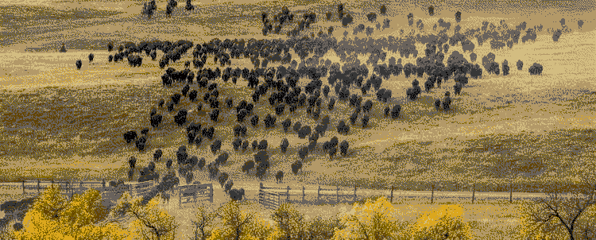

Registration Now Open for the 2026 Dhegiha Language Conference

Registration is now open for the 15th Annual Dhegiha Language Conference, which will be held at Downstream Casino & Resort on July 23rd and 24th, 2026. Here, the Dhegiha tribes (Osage, Ponca, Kaw, Omaha, and Quapaw) will come together to celebrate our languages and share our efforts in revitalizing them. Any and all are welcome to attend this conference, tribal member or not.*
If you are a Quapaw Nation employee or tribal member, you should register for the conference using our online registration form. Nation employees and former language students will have their registration fees covered by our department. Completed forms are due by close of business on July 11th, 2026.
👋 We look forward to seeing you there!
*Please note that if you are not a tribal employee or former language student, you must fill out the paper registration form listed on the Dhegiha Preservation Society Facebook page.
Posted June 8th, 2026